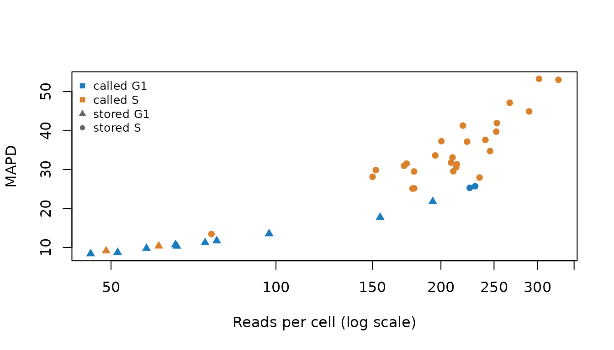
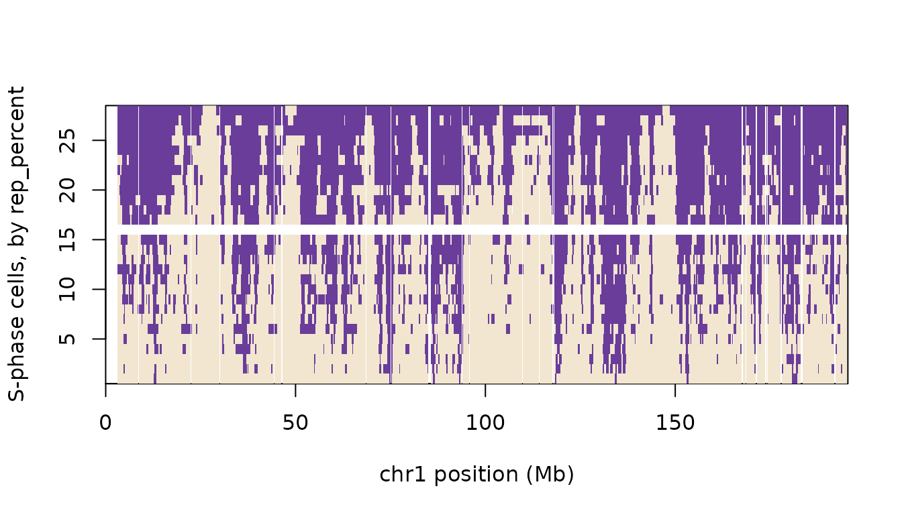
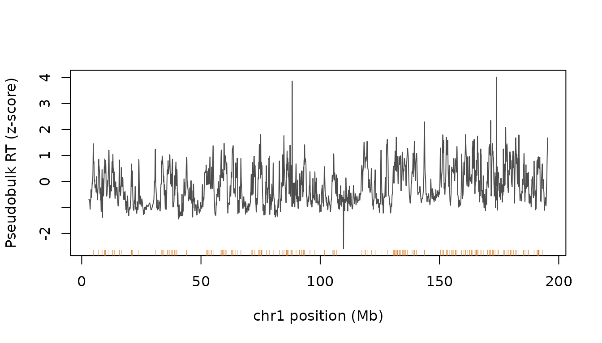
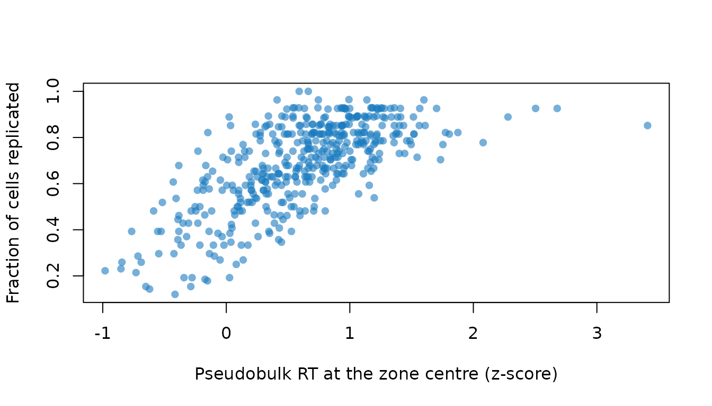
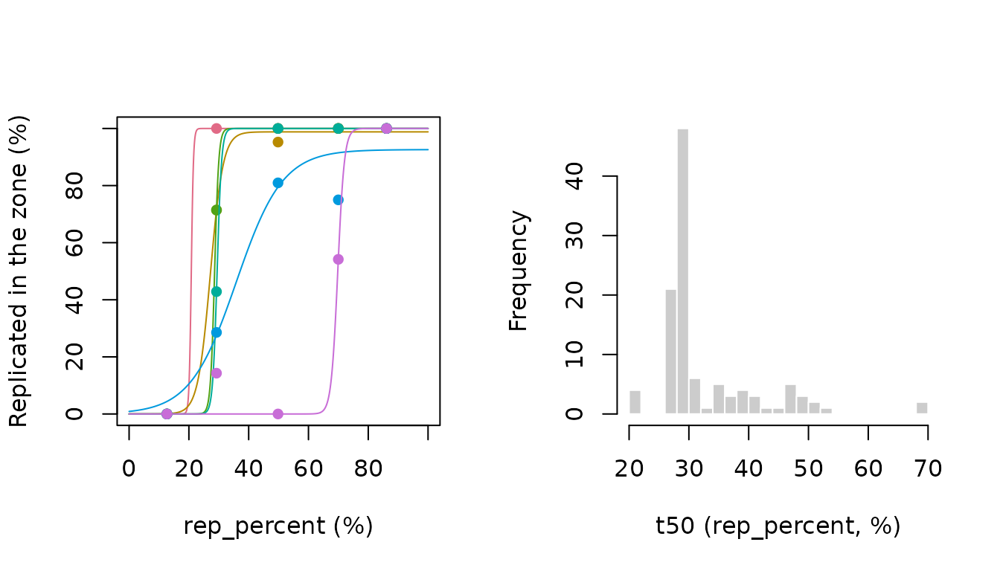
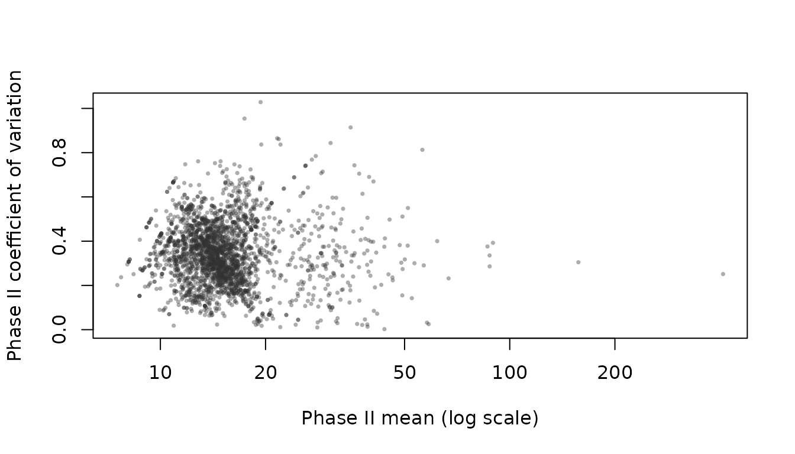
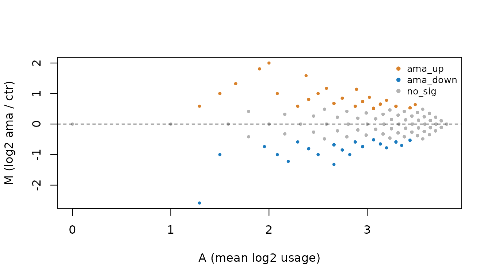

This vignette runs the whole analysis chain of the package on the small example dataset that ships with it, and shows the object each step returns. The package itself has no plotting functions; the figures are drawn with base R graphics so that you can see what each result looks like.
The example holds 40 cells of one sample, so the numbers below show what the objects look like. They carry no biological conclusion.
library(scRTtools)
library(GenomicRanges)
col_g1 <- "#1b7bbf"; col_s <- "#d9822b"; col_rep <- "#6a3d9a"; col_unrep <- "#f2e6d0"The example data
scrt_example_data() returns the autosomes (chr1 to
chr19) of 12 G1 and 28 S-phase cells of one mouse ESC 10x multiome
sample (mm10, 20 kb bins).
ex <- scrt_example_data()
names(ex)
#> [1] "bins" "bin_counts" "g1_windows" "window_counts" "rep_states" "rna_counts"
#> [7] "genes" "meta" "info"
str(ex$info)
#> List of 5
#> $ sample : chr "scRT1"
#> $ chromosomes: chr [1:19] "chr1" "chr2" "chr3" "chr4" ...
#> $ genome : chr "mm10"
#> $ bin_width : int 20000
#> $ created : chr "2026-11-12"
ex$bins[1:3]
#> GRanges object with 3 ranges and 3 metadata columns:
#> seqnames ranges strand | gc_frequency mappability is_mappable
#> <Rle> <IRanges> <Rle> | <numeric> <numeric> <logical>
#> chr1-1-20000 chr1 1-20000 * | 0 0 FALSE
#> chr1-20001-40000 chr1 20001-40000 * | 0 0 FALSE
#> chr1-40001-60000 chr1 40001-60000 * | 0 0 FALSE
#> -------
#> seqinfo: 19 sequences from mm10 genome
dim(ex$bin_counts)
#> [1] 123148 40
head(ex$meta[, c("sample", "is_G1", "rep_percent", "coverage", "mapd")], 4)
#> sample is_G1 rep_percent coverage mapd
#> scRT1-GGTTGCGGTGAGCAAG-1 scRT1 TRUE 0.05176 45.89 8.383
#> scRT1-ACCTAAATCGCATCCT-1 scRT1 TRUE 0.17117 48.98 9.152
#> scRT1-AACTACTCATTTGCTC-1 scRT1 TRUE 0.93434 51.33 8.755
#> scRT1-GAACCTTAGTCACCTC-1 scRT1 TRUE 0.14696 58.02 9.8331. Bins, counts and G1 cells
The first steps read a genome, a mappability track and the fragment
file of each sample, which the example does not ship. Their results are
stored in ex$bins, ex$bin_counts,
ex$g1_windows and ex$window_counts. On real
data the calls look like this:
bins <- make_fixed_bins(seqinfo, bin_width = 20000) # 1.1
bins <- compute_bin_mappability(bins, mappability_bedgraph) # 1.1
g1_windows <- define_G1_windows(bins, "atac_fragments.tsv.gz", # 1.2
meta_data, target_reads = 200)MAPD (the median absolute pairwise difference of neighbouring bins)
measures how uneven the coverage of a cell is.
find_g1_cells() fits the relation between MAPD and coverage
and calls the cells on the low-MAPD branch G1.
bin_counts <- Matrix::Matrix(ex$bin_counts, sparse = TRUE)
mapd <- calculate_mapd(bin_counts, ex$bins, ex$meta[, c("cell_id", "sample")],
verbose = FALSE)
g1 <- find_g1_cells(mapd, seed = 1, verbose = FALSE)
head(g1[, c("sample", "coverage", "mapd", "scaled_mapd", "is_G1")], 4)
#> sample coverage mapd scaled_mapd is_G1
#> scRT1-GGTTGCGGTGAGCAAG-1 scRT1 45.90 8.386 1.238 TRUE
#> scRT1-ACCTAAATCGCATCCT-1 scRT1 48.99 9.132 1.305 FALSE
#> scRT1-AACTACTCATTTGCTC-1 scRT1 51.41 8.729 1.217 TRUE
#> scRT1-GAACCTTAGTCACCTC-1 scRT1 58.04 9.768 1.282 TRUE
table(recomputed = g1$is_G1, stored = ex$meta[g1$cell_id, "is_G1"])
#> stored
#> recomputed FALSE TRUE
#> FALSE 26 2
#> TRUE 2 10The stored is_G1 was called among all cells of the
sample. Among these 40 cells the call agrees for 36: it recovers 10 of
the 12 G1 cells and calls 2 S-phase cells G1. The rest of the vignette
uses the stored labels.
In the plot, colour is the call made here and shape is the stored label.
plot(g1$coverage, g1$mapd, log = "x", col = ifelse(g1$is_G1, col_g1, col_s),
pch = ifelse(ex$meta[g1$cell_id, "is_G1"], 17, 16),
xlab = "Reads per cell (log scale)", ylab = "MAPD")
legend("topleft", c("called G1", "called S", "stored G1", "stored S"),
col = c(col_g1, col_s, "grey40", "grey40"), pch = c(15, 15, 17, 16),
bty = "n", cex = 0.8)
2. Replication states
assign_replication_states() runs a two-state HMM in
every S-phase cell on the G1 windows and maps the result back to the 20
kb bins (2 = unreplicated, 4 = replicated, NA = no call).
The infer_args are the package defaults.
s_cells <- rownames(ex$meta)[!ex$meta$is_G1]
window_counts <- Matrix::Matrix(ex$window_counts[, s_cells], sparse = TRUE)
res_states <- assign_replication_states(
window_counts, ex$g1_windows, ex$bins,
infer_args = list(hmm_aggr_width = 15L, init_ratio_lower = 1.2,
final_ratio_lower = 1.4),
verbose = FALSE)
sapply(res_states, dim)
#> genobins_rep_states g1bins_rep_states
#> [1,] 123148 101297
#> [2,] 28 28
table(res_states$genobins_rep_states, useNA = "ifany")
#>
#> 2 4 <NA>
#> 1416654 1440520 590970compute_rep_percent() gives every cell its replicated
fraction, which is its position in S phase, and drops cells that fail
the quality filters.
res_rp <- compute_rep_percent(res_states$genobins_rep_states, ex$bins,
ex$meta[s_cells, c("cell_id", "sample")],
verbose = FALSE)
md <- res_rp$meta_data
head(md[order(md$rep_percent), c("sample", "rep_percent", "sigma_chr", "pass_qc")], 4)
#> sample rep_percent sigma_chr pass_qc
#> scRT1-CCTAATAAGTTATGTG-1 scRT1 0.06384 0.06549 TRUE
#> scRT1-GGAACTAAGGCTGTCA-1 scRT1 0.14256 0.10954 TRUE
#> scRT1-AATCCATCAGTAGGTG-1 scRT1 0.17321 0.15175 TRUE
#> scRT1-GCTATTGCAGGAACCA-1 scRT1 0.20572 0.21655 TRUE
states <- res_rp$genobins_rep_states_filtered
keep <- intersect(colnames(states), rownames(md)[is.finite(md$rep_percent)])
states <- states[, keep, drop = FALSE]
md <- md[keep, , drop = FALSE]
dim(states)
#> [1] 123148 28All 28 S-phase cells pass the filters, and rep_percent
computed here is identical to the value of the original analysis stored
in ex$meta:
cor(md$rep_percent, ex$meta[keep, "rep_percent"])
#> [1] 1
max(abs(md$rep_percent - ex$meta[keep, "rep_percent"]))
#> [1] 0With the cells sorted by rep_percent, the states on chr1
show S phase going from early to late: the replicated (purple) regions
widen from the bottom row to the top. White means no call.
on_chr1 <- which(as.character(seqnames(ex$bins)) == "chr1")
cell_order <- order(md$rep_percent)
replicated <- states[on_chr1, cell_order, drop = FALSE] == 4
image(x = start(ex$bins)[on_chr1] / 1e6, y = seq_along(cell_order),
z = replicated + 0, col = c(col_unrep, col_rep), useRaster = TRUE,
xlab = "chr1 position (Mb)", ylab = "S-phase cells, by rep_percent")
To choose the HMM thresholds on new data,
evaluate_state_parameters() runs a grid of settings on a
subset of cells and rank_state_parameters() orders
them.
3. Replication tracks
A replication track is a run of replicated bins in one cell.
tracks <- define_replication_tracks(states, ex$bins,
setNames(md$rep_percent, keep), verbose = FALSE)
tracks
#> GRangesList object of length 28:
#> $`scRT1-CCTAATAAGTTATGTG-1`
#> GRanges object with 163 ranges and 6 metadata columns:
#> seqnames ranges strand | cell_id rep_percent cn
#> <Rle> <IRanges> <Rle> | <character> <numeric> <numeric>
#> [1] chr1 12680001-13340000 * | scRT1-CCTAATAAGTTATG.. 0.0638432 4
#> [2] chr1 74680001-75480000 * | scRT1-CCTAATAAGTTATG.. 0.0638432 4
#> [3] chr1 86200001-86720000 * | scRT1-CCTAATAAGTTATG.. 0.0638432 4
#> [4] chr1 93160001-93460000 * | scRT1-CCTAATAAGTTATG.. 0.0638432 4
#> [5] chr1 118280001-118720000 * | scRT1-CCTAATAAGTTATG.. 0.0638432 4
#> ... ... ... ... . ... ... ...
#> [159] chr18 77520001-78000000 * | scRT1-CCTAATAAGTTATG.. 0.0638432 4
#> [160] chr19 4100001-6820000 * | scRT1-CCTAATAAGTTATG.. 0.0638432 4
#> [161] chr19 6820001-7420000 * | scRT1-CCTAATAAGTTATG.. 0.0638432 4
#> [162] chr19 38280001-38840000 * | scRT1-CCTAATAAGTTATG.. 0.0638432 4
#> [163] chr19 47060001-47500000 * | scRT1-CCTAATAAGTTATG.. 0.0638432 4
#> num_bins flag na_fraction
#> <integer> <integer> <numeric>
#> [1] 33 0 0.0303030
#> [2] 40 0 0.1250000
#> [3] 26 0 0.0000000
#> [4] 15 0 0.0000000
#> [5] 22 0 0.0909091
#> ... ... ... ...
#> [159] 24 0 0.1250000
#> [160] 136 1 0.0514706
#> [161] 30 1 0.0000000
#> [162] 28 0 0.0000000
#> [163] 22 0 0.0454545
#> -------
#> seqinfo: 19 sequences from an unspecified genome; no seqlengths
#>
#> ...
#> <27 more elements>
track_lengths <- calc_rep_track_lengths(tracks)
head(track_lengths[, c("chr", "start", "end", "width_bp", "rep_percent", "flag")], 4)
#> chr start end width_bp rep_percent flag
#> 1 chr1 12680001 13340000 660000 0.06384 0
#> 2 chr1 74680001 75480000 800000 0.06384 0
#> 3 chr1 86200001 86720000 520000 0.06384 0
#> 4 chr1 93160001 93460000 300000 0.06384 0
track_gaps <- calc_rep_track_gaps(tracks)
head(track_gaps[, c("rep_percent", "chr", "gap_bp")], 4)
#> rep_percent chr gap_bp
#> 1 0.06384 chr1 61340000
#> 2 0.06384 chr1 10720000
#> 3 0.06384 chr1 6440000
#> 4 0.06384 chr1 24820000
head(summarize_track_lengths(track_lengths), 4)
#> cell_id median_length log_length rep_percent
#> 1 scRT1-AAACATGCACCCACCT-1 1280000 14.06 61.25
#> 2 scRT1-AATAGAGGTCCTCCAA-1 2400000 14.69 73.64
#> 3 scRT1-AATCCATCAGTAGGTG-1 710000 13.47 17.32
#> 4 scRT1-AGAACCAAGAAGGTGC-1 760000 13.54 34.94Tracks get longer as cells progress through S phase, because neighbouring tracks merge:
by_cell <- split(track_lengths$width_bp / 1e6, track_lengths$rep_percent)
boxplot(by_cell, at = 100 * as.numeric(names(by_cell)), boxwex = 2, log = "y",
xaxt = "n", col = col_rep, outline = FALSE, xlim = c(0, 100),
xlab = "rep_percent of the cell (%)", ylab = "Track length (Mb, log scale)")
axis(1)With several samples or conditions,
fit_track_velocity_linear(),
fit_track_length_models() and
fit_track_velocity_ode() model track length against
rep_percent. They need more cells than the example
holds.
4. Pseudobulk replication timing and peaks
calculate_pseudobulk_rt() pools the S-phase cells and
the G1 cells, corrects the S-phase counts for GC content and mappability
with the G1 pseudobulk, and returns a smoothed z-score per bin (high =
early replicating). find_rt_peaks() finds its local
maxima.
rt <- suppressWarnings(calculate_pseudobulk_rt(
bin_counts, ex$bins, ex$meta[, c("cell_id", "sample", "is_G1", "pass_qc")]))
rt[1:3]
#> GRanges object with 3 ranges and 1 metadata column:
#> seqnames ranges strand | score
#> <Rle> <IRanges> <Rle> | <numeric>
#> chr1-3000001-3020000 chr1 3000001-3020000 * | -0.685876
#> chr1-3020001-3040000 chr1 3020001-3040000 * | -0.697085
#> chr1-3040001-3060000 chr1 3040001-3060000 * | -0.703038
#> -------
#> seqinfo: 19 sequences from mm10 genome
summary(rt$score)
#> Min. 1st Qu. Median Mean 3rd Qu. Max.
#> -3.2726 -0.6919 -0.1569 -0.0365 0.4389 4.9990
rt_peaks <- find_rt_peaks(rt)
length(rt_peaks)
#> [1] 2080
rt_peaks[1:3]
#> GRanges object with 3 ranges and 5 metadata columns:
#> seqnames ranges strand | score RT_value local_median
#> <Rle> <IRanges> <Rle> | <numeric> <numeric> <numeric>
#> chr1-4860001-4880000 chr1 4860001-4880000 * | 1.452559 1.452559 1.225631
#> chr1-7140001-7160000 chr1 7140001-7160000 * | 0.853131 0.853131 0.743256
#> chr1-8540001-8560000 chr1 8540001-8560000 * | 0.456934 0.456934 0.209518
#> local_delta plateau_size
#> <numeric> <integer>
#> chr1-4860001-4880000 0.226927 1
#> chr1-7140001-7160000 0.109875 1
#> chr1-8540001-8560000 0.247416 1
#> -------
#> seqinfo: 19 sequences from mm10 genomeThe pseudobulk profile of chr1, with the RT peaks marked below the axis:
rt_chr1 <- rt[seqnames(rt) == "chr1"]
plot(start(rt_chr1) / 1e6, rt_chr1$score, type = "l", col = "grey30",
xlab = "chr1 position (Mb)", ylab = "Pseudobulk RT (z-score)")
rug(start(rt_peaks[seqnames(rt_peaks) == "chr1"]) / 1e6, col = col_s)
count_track_centers() counts, for a set of regions, the
tracks whose centre falls in each of them.
centers <- count_track_centers(tracks, rt_peaks)
table(centers$score)
#>
#> 0 1 2 3 4 5 13 17
#> 1699 318 47 11 2 1 1 1
centers[centers$score > 0][1:3]
#> GRanges object with 3 ranges and 5 metadata columns:
#> seqnames ranges strand | score RT_value local_median
#> <Rle> <IRanges> <Rle> | <integer> <numeric> <numeric>
#> chr1-13660001-13680000 chr1 13660001-13680000 * | 1 0.364768 0.269725
#> chr1-15780001-15800000 chr1 15780001-15800000 * | 2 0.826596 0.606107
#> chr1-20860001-20880000 chr1 20860001-20880000 * | 1 0.670061 0.490123
#> local_delta plateau_size
#> <numeric> <integer>
#> chr1-13660001-13680000 0.0950428 1
#> chr1-15780001-15800000 0.2204895 1
#> chr1-20860001-20880000 0.1799381 1
#> -------
#> seqinfo: 19 sequences from mm10 genomeannotate_peak_scores() adds the signal of bigWig or BED
files to such regions. It needs external files and is not run here.
5. Initiation zones
Short tracks cluster where replication starts.
define_initiation_zones() groups them around the RT peaks
and returns the zones (IZ) and the tracks with the zone each was
assigned to. The default is min_usage = 3; with 28 cells
the vignette lowers it to 2.
res_iz <- define_initiation_zones(tracks, rt_peaks, min_usage = 2L, verbose = FALSE)
iz <- res_iz$izones
iz
#> GRanges object with 449 ranges and 7 metadata columns:
#> seqnames ranges strand | iz_id q5 q25 q50 q75
#> <Rle> <IRanges> <Rle> | <integer> <numeric> <numeric> <numeric> <numeric>
#> [1] chr1 4898000-4977999 * | 1 4908000 4940000 4950000 4960000
#> [2] chr1 7083000-7147999 * | 2 7093000 7105000 7120000 7130000
#> [3] chr1 11370000-11409999 * | 3 11380000 11380000 11380000 11400000
#> [4] chr1 15790000-15836999 * | 4 15800000 15800000 15800000 15815000
#> [5] chr1 18090500-18119499 * | 5 18100500 18102500 18105000 18107500
#> ... ... ... ... . ... ... ... ... ...
#> [445] chr19 41855000-41937999 * | 445 41865000 41885000 41910000 41920000
#> [446] chr19 55675000-55775999 * | 446 55685000 55705000 55730000 55750000
#> [447] chr19 56886000-56957999 * | 447 56896000 56920000 56930000 56940000
#> [448] chr19 58612000-58667999 * | 448 58622000 58630000 58640000 58650000
#> [449] chr19 59291000-59328999 * | 449 59301000 59305000 59310000 59315000
#> q95 n_tracks
#> <numeric> <integer>
#> [1] 4968000 5
#> [2] 7138000 3
#> [3] 11400000 5
#> [4] 15827000 3
#> [5] 18109500 2
#> ... ... ...
#> [445] 41928000 3
#> [446] 55766000 3
#> [447] 56948000 5
#> [448] 58658000 2
#> [449] 59319000 2
#> -------
#> seqinfo: 19 sequences from an unspecified genome; no seqlengths
table(assigned = !is.na(unlist(res_iz$tracks)$iz_id))
#> assigned
#> FALSE TRUE
#> 11756 1654The firing functions use an rt column on the zones. It
is the fraction of cells replicated at the zone centre. A zone whose
centre bin has no call in any cell gets rt = NaN.
calculate_firing_range() takes all zones, because the
iz_id of the tracks indexes the full set; the two order
functions need a finite rt and get the other zones.
centre_bin <- findOverlaps(resize(iz, 1L, fix = "center"), ex$bins, select = "first")
iz$rt <- rowMeans(states[centre_bin, , drop = FALSE] == 4, na.rm = TRUE)
sum(!is.finite(iz$rt))
#> [1] 2
cells_with_tracks <- intersect(keep, unique(unlist(res_iz$tracks)$cell_id))
firing_range <- calculate_firing_range(iz, states[, cells_with_tracks, drop = FALSE],
res_iz$tracks, verbose = FALSE)
firing_range[1:3]
#> GRanges object with 3 ranges and 11 metadata columns:
#> seqnames ranges strand | iz_id q5 q25 q50 q75
#> <Rle> <IRanges> <Rle> | <integer> <numeric> <numeric> <numeric> <numeric>
#> [1] chr1 4898000-4977999 * | 1 4908000 4940000 4950000 4960000
#> [2] chr1 7083000-7147999 * | 2 7093000 7105000 7120000 7130000
#> [3] chr1 11370000-11409999 * | 3 11380000 11380000 11380000 11400000
#> q95 n_tracks rt earliest_rep_percent latest_unrep_percent corroborated
#> <numeric> <integer> <numeric> <numeric> <numeric> <logical>
#> [1] 4968000 5 0.851852 NA NA FALSE
#> [2] 7138000 3 0.666667 0.320881 0.527509 TRUE
#> [3] 11400000 5 0.740741 0.320881 0.376066 TRUE
#> -------
#> seqinfo: 19 sequences from an unspecified genome; no seqlengths
iz_rt <- iz[is.finite(iz$rt)]
firing_order <- calculate_firing_order(iz_rt, states, md)
dim(firing_order)
#> [1] 447 4
firing_order[1:4, ]
#> observed_fired_expected_fired observed_unfired_expected_unfired
#> chr7:141131000-141168999 100.00 0
#> chr17:47493000-47575999 100.00 0
#> chr11:74650500-74679499 96.15 0
#> chr1:181980000-182026999 96.00 0
#> observed_fired_expected_unfired observed_unfired_expected_fired
#> chr7:141131000-141168999 0 0.000
#> chr17:47493000-47575999 0 0.000
#> chr11:74650500-74679499 0 3.846
#> chr1:181980000-182026999 0 4.000
predicted_order <- predict_firing_order(iz_rt, res_iz$tracks)
predicted_order[1:4, ]
#> observed_fired_expected_fired observed_unfired_expected_unfired
#> chr7:141131000-141168999 10.714 0
#> chr17:47493000-47575999 10.714 0
#> chr11:74650500-74679499 7.143 0
#> chr1:181980000-182026999 10.714 0
#> observed_fired_expected_unfired observed_unfired_expected_fired
#> chr7:141131000-141168999 0 89.29
#> chr17:47493000-47575999 0 89.29
#> chr11:74650500-74679499 0 92.86
#> chr1:181980000-182026999 0 89.29The zone rt computed from single cells agrees with the
pseudobulk profile: zones that replicate in more cells sit at higher
pseudobulk RT.
centre_rt <- findOverlaps(resize(iz, 1L, fix = "center"), rt, select = "first")
plot(rt$score[centre_rt], iz$rt, pch = 16, col = adjustcolor(col_g1, 0.6),
xlab = "Pseudobulk RT at the zone centre (z-score)",
ylab = "Fraction of cells replicated")
Further zone analyses are in the package but need more zones or
external data than the example offers:
fit_all_izone_velocities() (4.4), the adjacent-zone
functions make_adjacent_pairs(),
build_firing_matrix() and
summarise_pair_adjacency() (4.3.1), and the heterogeneity
functions from prepare_iz_data() to
cluster_iz_heterogeneity().
6. Replication tempo
rep_tempo() groups the cells into bins along S phase and
gives, for every region, its mean replicated percentage among the cells
of each bin. fit_rep_tempo() fits a curve to each region
and reports its timing (t25, t50,
t75) and steepness. Real datasets use more bins (for
example 100); five suit 28 cells.
tempo <- rep_tempo(states, iz, meta_data = md, nbin_rep = 5L)
head(tempo, 4)
#> rep_bin_0001 rep_bin_0002 rep_bin_0003 rep_bin_0004 rep_bin_0005
#> 1 33.33 71.43 100.00 100.00 100
#> 2 0.00 42.86 66.67 100.00 100
#> 3 0.00 42.86 100.00 100.00 100
#> 4 33.33 42.86 83.33 95.83 100
tempo_fit <- fit_rep_tempo(tempo, model_type = "sslogis", verbose = FALSE)
dim(tempo_fit)
#> [1] 449 53
head(tempo_fit[, c("region_id", "t25", "t50", "t75", "max_slope", "r_squared",
"fit_status")], 4)
#> region_id t25 t50 t75 max_slope r_squared fit_status
#> 1 1 NA 20.45 29.49 0.03028 0.9875 curve_qc_flag
#> 2 2 25.06 37.81 50.32 0.02167 0.9584 curve_qc_flag
#> 3 3 28.64 29.45 30.26 0.33803 1.0000 ok
#> 4 4 15.11 30.13 44.91 0.01839 0.9562 curve_qc_flag
table(tempo_fit$fit_status)
#>
#> constant_response curve_qc_flag fit_failed no_data ok
#> 2 132 41 1 110
#> partial_thresholds
#> 163The fitted curves of six zones with fit_status == "ok",
chosen across the range of t50, are drawn over the binned
values (left); on the right is the distribution of t50 over
all such zones. With five bins many curves are steep, since few points
lie on the rise.
rep_bins <- attr(tempo_fit, "rep_bins")$rep_percent
curves <- attr(tempo_fit, "curves")
ok <- which(tempo_fit$fit_status == "ok")
pick <- ok[order(tempo_fit$t50[ok])][round(seq(1, length(ok), length.out = 6))]
pal <- hcl.colors(6, "Dark 3")
op <- par(mfrow = c(1, 2))
plot(NA, xlim = c(0, 100), ylim = c(0, 100), xlab = "rep_percent (%)",
ylab = "Replicated in the zone (%)")
for (k in seq_along(pick)) {
lines(curves$rep_percent, 100 * curves$fraction[pick[k], ], col = pal[k])
points(rep_bins, unlist(tempo[pick[k], ]), col = pal[k], pch = 16)
}
hist(tempo_fit$t50[ok], breaks = 20, col = "grey80", border = "white",
main = "", xlab = "t50 (rep_percent, %)")
par(op)model_type = "gam_low" and "gam_fast" fit a
GAM instead and need the mgcv package. n_boot
adds bootstrap confidence intervals.
7. RNA of the same cells
The RNA counts cover the 24,860 genes of chr1 to chr19. Genes seen in fewer than three S-phase cells are dropped first, which leaves about an eighth of them.
rna <- ex$rna_counts[, keep, drop = FALSE]
rna <- rna[Matrix::rowSums(rna > 0) >= 3, , drop = FALSE]
dim(rna)
#> [1] 3016 28SC2P_gene_unit() fits the two-phase model of SC2P to
every gene. It reports the fraction of cells in Phase I (background
counts) and, among the Phase II cells, the mean and the coefficient of
variation of expression.
sc2p <- suppressWarnings(SC2P_gene_unit(as.matrix(rna)))
dim(sc2p)
#> [1] 3016 4
head(sc2p, 4)
#> gene phase_I_ratio phase_II_mean phase_II_varcoff
#> Xkr4 Xkr4 0.8929 12.67 0.5390
#> Mrpl15 Mrpl15 0.8929 14.22 0.3638
#> Lypla1 Lypla1 0.8929 12.49 0.2416
#> Tcea1 Tcea1 0.9643 26.04 NA
plot(sc2p$phase_II_mean, sc2p$phase_II_varcoff, log = "x", pch = 16, cex = 0.5,
col = adjustcolor("grey20", 0.4), xlab = "Phase II mean (log scale)",
ylab = "Phase II coefficient of variation")
gex_tempo() is the expression counterpart of
rep_tempo(): expression of every gene in bins of cells
along S phase, either from the SC2P model or as mean counts per
10,000.
gex <- suppressWarnings(gex_tempo(rna, md, nbin_rep = 5L, method = "cp10k"))
names(gex)
#> [1] "df_cp10k_mean"
head(gex$df_cp10k_mean, 4)
#> rep_bin_0001 rep_bin_0002 rep_bin_0003 rep_bin_0004 rep_bin_0005
#> Xkr4 0.000 2.829 0.8851 0.000 4.002
#> Mrpl15 10.967 0.000 0.0000 0.000 3.249
#> Lypla1 0.000 0.000 0.0000 1.965 7.250
#> Tcea1 8.681 0.000 2.6357 1.827 4.002The S-phase progression markers are genes whose expression follows
rep_percent. analyze_one_group() runs the
whole analysis for one group of cells: a GAM per gene, the marker call
and the fitted curves. The thresholds below are much looser than the
defaults. The defaults need at least 50 cells per group, and with only
that lowered to 10 they call no gene on 28 cells.
meta <- ex$meta[, c("cell_id", "sample", "is_G1", "rep_percent", "pass_qc")]
meta[keep, "rep_percent"] <- md$rep_percent
meta$state <- "ctr"
meta <- prepare_metadata(meta, colnames(ex$rna_counts))
norm <- normalize_sparse_counts(ex$rna_counts)
markers <- analyze_one_group(
"ctr", meta, norm$log_normalized, norm$normalized,
min_cells_per_group = 10L, min_cell_fraction = 0.05, fdr_threshold = 0.5,
gam_basis_k = 5L, n_curve_points = 41L, verbose = FALSE)
names(markers)
#> [1] "analysis_group" "gam_results" "marker_table" "group_meta" "cells"
#> [6] "curves" "curve_z" "rep_grid" "clusters" "hclust"
#> [11] "gene_order"
table(markers$gam_results$fit_status)
#>
#> Expression is constant or invalid. ok
#> 15651 9209
dim(markers$marker_table)
#> [1] 98 23
dim(markers$curves)
#> [1] 98 418. Comparing two groups
(retreat_figure6_helpers.R)
The group functions compare two conditions, ctr and
ama by default. The example has one sample, so its S-phase
cells are split into two pseudo-groups that alternate along
rep_percent. The split has no meaning; it only shows the
shape of the tables.
state <- character(nrow(md))
state[order(md$rep_percent, rownames(md))] <- rep(c("ctr", "ama"), length.out = nrow(md))
names(state) <- rownames(md)
table(state)
#> state
#> ama ctr
#> 14 14
all_tracks <- unlist(res_iz$tracks, use.names = FALSE)
peak_id <- sprintf("%s:%d-%d", as.character(seqnames(rt_peaks)),
start(rt_peaks), end(rt_peaks))
long <- do.call(rbind, lapply(c("ctr", "ama"), function(s) {
cells <- names(state)[state == s]
usage <- countOverlaps(rt_peaks, all_tracks[all_tracks$cell_id %in% cells])
data.frame(region_id = peak_id, state = s, usage = ifelse(usage > 0, usage, NA))
}))
long$state <- factor(long$state, levels = c("ctr", "ama"))
head(long, 3)
#> region_id state usage
#> chr1-4860001-4880000 chr1:4860001-4880000 ctr 12
#> chr1-7140001-7160000 chr1:7140001-7160000 ctr 9
#> chr1-8540001-8560000 chr1:8540001-8560000 ctr 6pivot_state_wide() puts the two groups side by side,
add_ma_columns() adds the difference and the mean, and
call_diff_groups() labels the regions that differ.
wide <- pivot_state_wide(long, "region_id", "usage", na = "drop")
head(wide, 3)
#> region_id ctr ama
#> 1 chr1:4860001-4880000 12 10
#> 2 chr1:7140001-7160000 9 9
#> 3 chr1:8540001-8560000 6 7
head(add_ma_columns(wide, "log2"), 3)
#> region_id ctr ama A M
#> 1 chr1:4860001-4880000 12 10 3.453 -0.2630
#> 2 chr1:7140001-7160000 9 9 3.170 0.0000
#> 3 chr1:8540001-8560000 6 7 2.696 0.2224
diff_groups <- call_diff_groups(long, "region_id", "usage", 0.5)
table(diff_groups[[2]])
#>
#> ama_up ama_down no_sig
#> 91 56 1642An MA plot of the two pseudo-groups, coloured by the call:
ma <- add_ma_columns(wide, "log2")
grp <- as.character(diff_groups$iz_group[match(ma$region_id, diff_groups$region_id)])
plot(ma$A, ma$M, pch = 16, cex = 0.6,
col = c(ama_up = col_s, ama_down = col_g1, no_sig = "grey70")[grp],
xlab = "A (mean log2 usage)", ylab = "M (log2 ama / ctr)")
abline(h = 0, lty = 2)
legend("topright", c("ama_up", "ama_down", "no_sig"), pch = 16, bty = "n",
col = c(col_s, col_g1, "grey70"), cex = 0.8)
combine_rep_tempo_feature(),
annotate_track_segments(),
summarise_by_diff_group() and
find_intersection() continue from here on tempo fits, RT
segments and track lengths of the two groups.
9. Regressions with HC3 standard errors
These functions relate replication to expression with genes as
observations, fit the same model in each sample and combine the two.
Here the two pseudo-groups stand in for two samples. The first model
(exposure) regresses the replicated fraction at the gene
start on the expression of the gene, adjusting for GC content and for
the position of the gene on its chromosome. To keep the example short,
one spline of position is shared by all chromosomes, so this term is
only a rough adjustment. The second (rt) is a Poisson model
of the gene counts with the replicated fraction as the predictor.
genes <- ex$genes
tss <- GRanges(genes$chr, IRanges(genes$start, width = 1L))
tss_bin <- findOverlaps(tss, ex$bins, select = "first")
head(make_bin(genes$chr, genes$start), 3)
#> [1] "chr1-3200001-3220000" "chr1-3460001-3480000" "chr1-3640001-3660000"
fit_one <- function(s) {
cells <- names(state)[state == s]
d <- data.frame(
pos = genes$start / 1e6,
gc = ex$bins$gc_frequency[tss_bin],
rt = rowMeans(states[tss_bin, cells, drop = FALSE] == 4, na.rm = TRUE),
count = Matrix::rowSums(ex$rna_counts[genes$gene, cells, drop = FALSE]))
d <- d[!is.na(tss_bin) & ex$bins$is_mappable[tss_bin] %in% TRUE & is.finite(d$rt), ]
d$expr_z <- as.numeric(scale(log1p(d$count / sum(d$count) * 1e4)))
B <- full_rank_model_matrix(~ splines::ns(pos, df = 4) + gc, d)
ols <- fit_ols_hc3(cbind(B, exposure = d$expr_z), d$rt)
pois <- fit_poisson_hc3(cbind(B, rt = d$rt), d$count,
rep(log(sum(d$count)), nrow(d)), "rt")
cols <- c("term", "beta", "se", "p", "n", "status")
cbind(sample = s, rbind(ols[cols], pois[cols]))
}
fit_table <- do.call(rbind, lapply(c("ctr", "ama"), fit_one))
fit_table
#> sample term beta se p n status
#> 1 ctr exposure 0.03108 0.001397 2.422e-108 20616 ok
#> 2 ctr rt 1.55149 0.593726 8.971e-03 20616 ok
#> 3 ama exposure 0.03041 0.001432 5.687e-99 20616 ok
#> 4 ama rt 1.38222 0.560950 1.374e-02 20616 ok
combine_two_samples(fit_table, "term")
#> term beta se p replication_p same_direction Q heterogeneity_p I2 status
#> 1 exposure 0.03075 0.0010 1.304e-207 5.687e-99 TRUE 0.11333 0.7364 0 ok
#> 2 rt 1.46205 0.4077 3.362e-04 1.374e-02 TRUE 0.04294 0.8358 0 ok
#> beta_ama se_ama p_ama beta_ctr se_ctr p_ctr
#> 1 0.03041 0.001432 5.687e-99 0.03108 0.001397 2.422e-108
#> 2 1.38222 0.560950 1.374e-02 1.55149 0.593726 8.971e-03The coefficients with their 95% HC3 confidence intervals:
op <- par(mfrow = c(1, 2), mar = c(4, 4, 2, 1))
for (tm in c("exposure", "rt")) {
f <- fit_table[fit_table$term == tm, ]
lo <- f$beta - 1.96 * f$se
hi <- f$beta + 1.96 * f$se
plot(f$beta, 1:2, xlim = range(0, lo, hi), ylim = c(0.5, 2.5), pch = 16,
yaxt = "n", xlab = "Coefficient", ylab = "", main = tm)
segments(lo, 1:2, hi, 1:2)
axis(2, 1:2, f$sample, las = 1)
abline(v = 0, lty = 2)
}
par(op)add_interaction_terms() builds the design of the
interaction models, and permute_within_bins() gives the
permutation used for their null distribution: cells are shuffled only
within bins of S-phase progress.
set.seed(7)
permute_within_bins(unname(state), md$rep_percent, 0.1)
#> [1] 1 2 3 6 5 4 7 8 9 10 13 12 11 14 17 16 15 20 21 18 19 24 25 22 23 26 27 2810. Seurat objects: UMAP and pseudobulk RNA
The example data is a list of plain matrices and
GRanges, not a Seurat object, and the package does not
depend on Seurat. The embedding and the pseudobulk RNA table are
standard Seurat steps, so they are not package functions. The chunks
below are not run; they show how the Seurat objects
connect to the package. They assume the per-sample
wnn_rna_filtered.rds objects (assay rna) and
genobins_20kb_raw_matrix.rds DNA count matrices of the full
dataset, and Seurat 5, harmony, BPCells and uwot.
Merge the samples with the same
"<sample>-<barcode>" cell IDs as the rest of
the package (find_sample_file() and
add_sample_prefix()), then build the RNA embedding:
SCTransform, PCA, Harmony on sample, UMAP.
library(Seurat)
data_dir <- "results/1.data"
samples <- c("scRT1", "scRT2")
wnn_list <- lapply(samples, function(s) {
obj <- readRDS(find_sample_file(data_dir, s, "wnn_rna_filtered.rds"))
obj <- RenameCells(obj, new.names = add_sample_prefix(colnames(obj), s))
obj$sample <- s
obj$cell_id <- colnames(obj)
obj
})
wnn <- JoinLayers(Reduce(merge, wnn_list))
wnn <- NormalizeData(wnn, assay = "rna")
wnn <- SCTransform(wnn, assay = "rna")
wnn <- RunPCA(wnn, assay = "SCT")
wnn <- harmony::RunHarmony(wnn, group.by.vars = "sample", reduction.use = "pca",
reduction.save = "har_pca")
wnn <- RunUMAP(wnn, reduction = "har_pca", dims = 1:30, a = 0.7, b = 0.9,
reduction.name = "har_umap", reduction.key = "harumap_")The DNA embedding uses the 20 kb bin counts (the input of
count_reads() / assign_replication_states())
as a tile assay: TF-IDF style LSI with BPCells, 50 SVD components,
Harmony, UMAP. With both reductions in place, Seurat’s weighted nearest
neighbours give a joint RNA + DNA UMAP
(FindMultiModalNeighbors(), the standard Seurat WNN
call).
library(BPCells)
dna <- Reduce(cbind, lapply(samples, function(s) {
m <- readRDS(find_sample_file(data_dir, s, "genobins_20kb_raw_matrix.rds"))
colnames(m) <- add_sample_prefix(colnames(m), s)
as(m, "IterableMatrix")
}))
dna <- dna[, colnames(wnn)]
wnn[["tile"]] <- CreateAssay5Object(counts = dna, min.cells = 0, min.features = 0)
lsi <- log1p(1e4 * multiply_rows(multiply_cols(dna, 1 / Matrix::colSums(dna)),
1 / Matrix::rowMeans(dna)))
st <- matrix_stats(lsi, col_stats = "variance")$col_stats
lsi <- multiply_cols(add_cols(lsi, -st["mean", ]), 1 / st["variance", ])
sv <- BPCells::svds(lsi, k = 50)
pca_dna <- multiply_cols(sv$v, sv$d)
dimnames(pca_dna) <- list(colnames(dna), paste0("LSI_", 1:50))
wnn[["lsi"]] <- CreateDimReducObject(pca_dna, key = "LSI_", assay = "tile")
wnn <- harmony::RunHarmony(wnn, group.by.vars = "sample", reduction.use = "lsi",
reduction.save = "har_lsi")
set.seed(2026)
wnn <- RunUMAP(wnn, reduction = "har_lsi", dims = 1:50,
reduction.name = "hardnaumap", reduction.key = "hardnaumap_")
# Joint RNA + DNA embedding (Seurat WNN).
wnn <- FindMultiModalNeighbors(wnn, reduction.list = list("har_pca", "har_lsi"),
dims.list = list(1:30, 2:50))
wnn <- RunUMAP(wnn, nn.name = "weighted.nn", reduction.name = "wnn_umap",
reduction.key = "wnnUMAP_")Package results attach to the object through cell_id,
for example rep_percent from
compute_rep_percent() and the G1/S labels from
find_g1_cells(), to colour the UMAPs by S-phase progress. A
pseudobulk RNA table sums the RNA counts per condition with
AggregateExpression() and scales each condition to counts
per 10,000. The per-cell CP10K pseudobulk of S and G1 cells used for
replication-coupled expression is
aggregate_pseudobulk_s_g1_counts(), which takes the bin
count matrices and needs no Seurat object.
meta <- readRDS(file.path(data_dir, "merge/meta_data.rds")) # has `state`
wnn$state <- factor(meta$state[match(colnames(wnn), meta$cell_id)],
levels = c("ctr", "ama"))
pb <- AggregateExpression(wnn, assays = "rna", group.by = "state")$rna # sums counts
pb <- pb[Matrix::rowSums(pb) > 0, ]
cp10k <- sweep(as.matrix(pb), 2, Matrix::colSums(pb), "/") * 1e4
head(cp10k)Session
sessionInfo()
#> R version 4.6.2 (2026-10-29)
#> Platform: x86_64-pc-linux-gnu
#> Running under: Ubuntu 26.04.1 LTS
#>
#> Matrix products: default
#> BLAS: /usr/lib/x86_64-linux-gnu/openblas-pthread/libblas.so.3
#> LAPACK: /usr/lib/x86_64-linux-gnu/openblas-pthread/libopenblasp-r0.3.32.so; LAPACK version 3.12.0
#>
#> locale:
#> [1] LC_CTYPE=C.UTF-8 LC_NUMERIC=C LC_TIME=C.UTF-8 LC_COLLATE=C.UTF-8
#> [5] LC_MONETARY=C.UTF-8 LC_MESSAGES=C.UTF-8 LC_PAPER=C.UTF-8 LC_NAME=C
#> [9] LC_ADDRESS=C LC_TELEPHONE=C LC_MEASUREMENT=C.UTF-8 LC_IDENTIFICATION=C
#>
#> time zone: UTC
#> tzcode source: system (glibc)
#>
#> attached base packages:
#> [1] stats4 stats graphics grDevices utils datasets methods base
#>
#> other attached packages:
#> [1] GenomicRanges_1.64.0 Seqinfo_1.2.0 IRanges_2.46.0 S4Vectors_0.50.3
#> [5] BiocGenerics_0.58.1 generics_0.1.4 scRTtools_0.0.0.9001
#>
#> loaded via a namespace (and not attached):
#> [1] Matrix_1.7-6 jsonlite_2.0.0 compiler_4.6.2 Rcpp_1.1.2
#> [5] parallel_4.6.2 jquerylib_0.1.4 splines_4.6.2 systemfonts_1.3.3
#> [9] textshaping_1.0.5 BiocParallel_1.46.0 yaml_2.3.12 fastmap_1.2.0
#> [13] lattice_0.23-1 R6_2.6.1 GenomeInfoDb_1.48.0 knitr_1.52
#> [17] desc_1.4.3 bslib_0.12.0 rlang_1.3.0 cachem_1.1.0
#> [21] xfun_0.62 fs_2.1.0 sass_0.4.10 otel_0.3.0
#> [25] cli_3.6.6 withr_3.0.3 pkgdown_2.2.1 mgcv_1.9-4
#> [29] digest_0.6.39 grid_4.6.2 lifecycle_1.0.5 nlme_3.1-171
#> [33] evaluate_1.0.5 codetools_0.2-20 ragg_1.5.2 httr_1.4.9
#> [37] rmarkdown_2.32 UCSC.utils_1.8.0 tools_4.6.2 htmltools_0.5.9